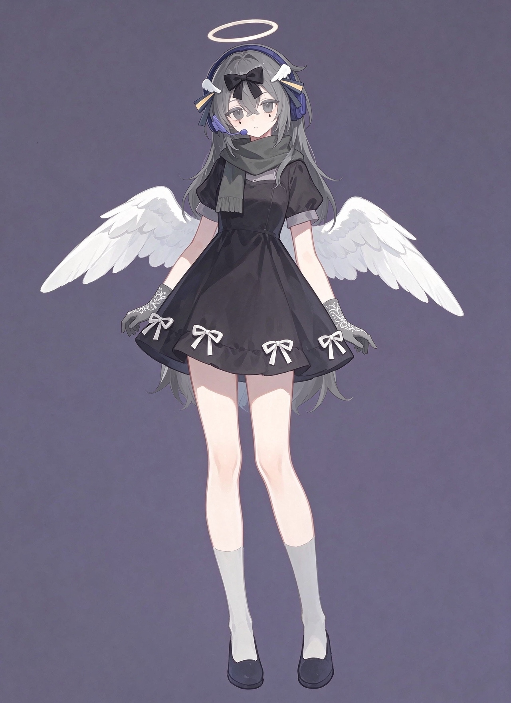
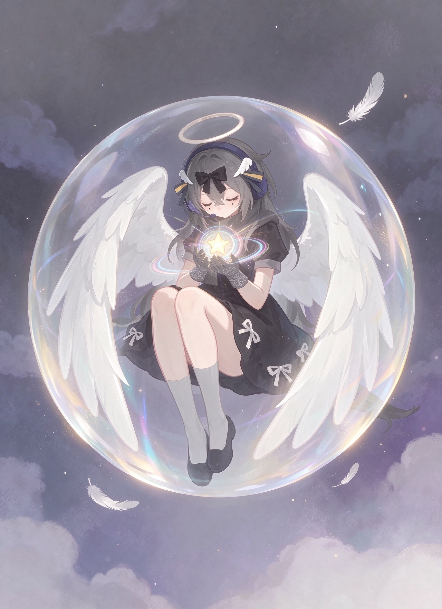
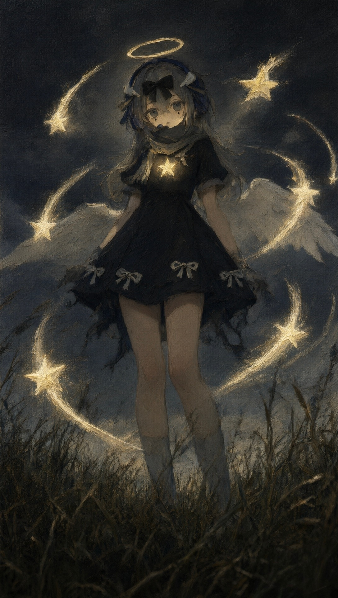
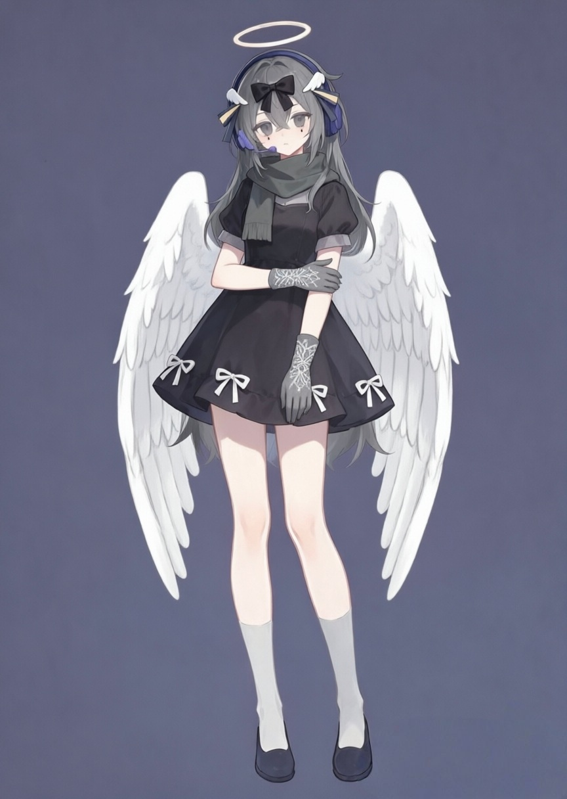

翅膀打开的样子
尽管乍一看可能会被认为是萨凯唯（鸟类半人），但羽绪实则为精灵，也就是因为这对翅膀，羽绪被视为异类，童年一直生活在歧视的阴影中。尽管羽绪一直试图去除掉这个翅膀，但很显然，她没有这个能力，同时让她苦恼的是，这个翅膀似乎有能力一直保护她，被自己所憎恨之物保护一直让她感到痛苦。由于她后天的努力，她有着充分的能力去离开家乡自己生活，羽绪为了获得进一步的成就，主动参与了精锐选拔赛。

羽绪天生带着这对翅膀，尽管她本人觉得它们很碍事，但在关键时刻它们又总能引导坚硬的光幕产生来保护她

就和其他的空精灵一样，羽绪能与天空建立联系，进而操纵闪耀的星星的产生，进行防御与攻击

翅膀收起的样子